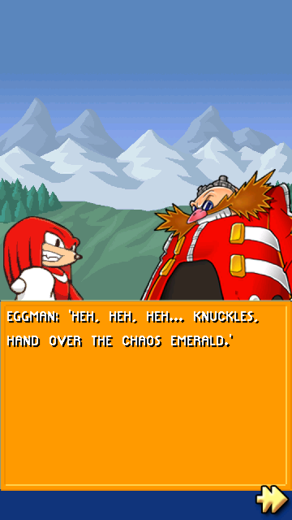
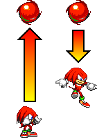
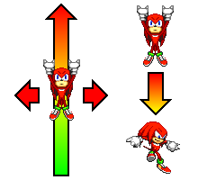
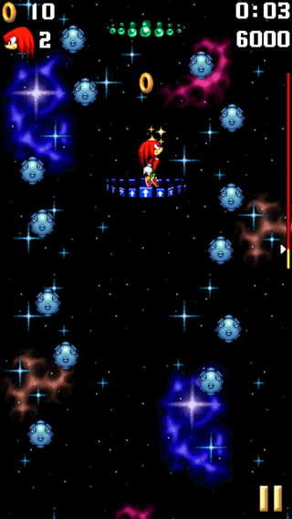
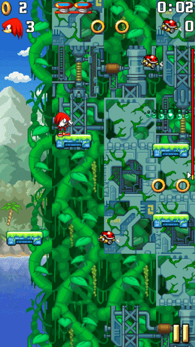
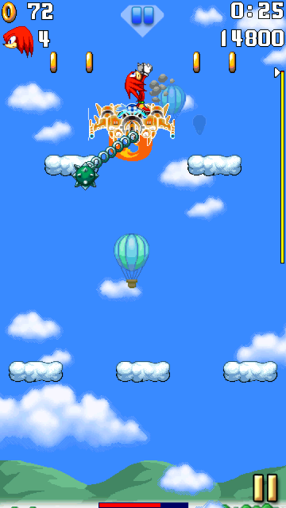

Knuckles the Echidna
Character Description

BIOGRAPHY:
Knuckles is a rascal echidna with a heroic heart. He is a little gullible, but possesses an enormous strength that he can crush massive boulders easily.
BRIEF GAMEPLAY DESCRIPTION:
Knuckles plays a role in the story and is a playable character in Sonic Jump Revival.
With his more advanced abilities, Knuckles is an interesting character to play as for advanced players.
Unlocking Knuckles

Knuckles can be unlocked after clearing Mountain Zone Act 3.
Sonic meets Knuckles having a Chaos Emerald being stolen by Dr. Eggman.
Knuckles then joins Sonic and Tails to stop Eggman's diabolical plans.
In the STORY MODE, you can watch the cutscenes as Knuckles after this point (except the end of COSMIC and BONUS zone).
Abilities
Normal jump

Knuckles has a normal jump height and falling speed.
Super Jump (Spiral Upper)
DESCRIPTION:
Knuckles' Super Jump is the Spiral Upper.
This ability allows him to perform a quick and very high double jump.

FIRST COMMAND:
While the Spiral Upper makes Knuckles jump higher, his horizontal velocity is reduced by half.
Therefore, you have to be careful about where to use the Spiral Upper.
SECOND COMMAND:
Using the Super Jump command during the Spiral Upper stops Knuckles' height distance.
This command is useful to prevent from jumping too high and to prevent the platforms below to disappear.
Gameplay Tips
Recovering from a fall

Because Knuckles' double jump is higher, he can recover from a long fall.
You can use this ability to reach higher platforms and hoops.
Landing faster after double jump
The Spiral Upper makes Knuckles bypass certain platforms.
The problem is when the double jump is over, platforms below might disappear.
If you press the "select" icon right after the start of the Spiral Upper, Knuckles can reduce his double jump height and stay at nearly the same height.

The best example of this is the first spring platform in Jungle Zone Act 2.
Be careful when jumping very high with the Spiral Upper.
Otherwise, the spring platform will disappear from below.
During boss battles

Knuckles can jump so high using his Spiral Upper he can bypass Dr. Eggman's height easily during boss battles.
While using the Spiral Upper, press the Super Jump command at the same height as Dr. Eggman to get a chance at hitting him right after the first hit.
Use this technique to defeat bosses quicker.